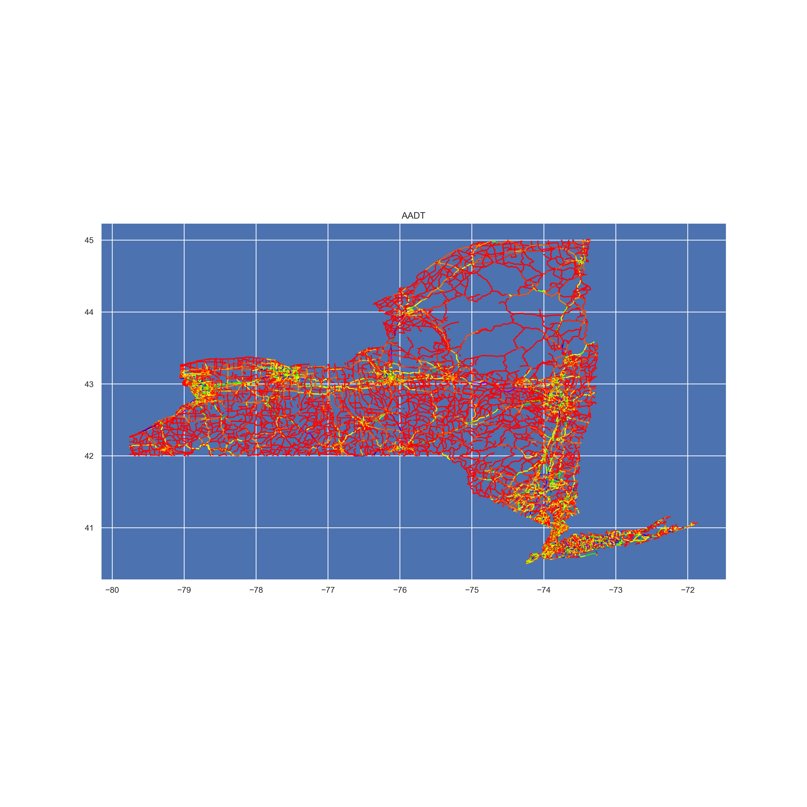

James A. Scharf
I created most of the following maps with the fantastic Geopandas and Geoplot libraries.

A combined vegetation and trail map of Glacier National Park. Siyeh Pass, my favorite hike, is red.

A map of D factor measurements in Ohio. Created while working for ODN.

A map of all D.C. crashes by ward. Created while working for ODN.

A map of New York traffic volume. Created while working for ODN.